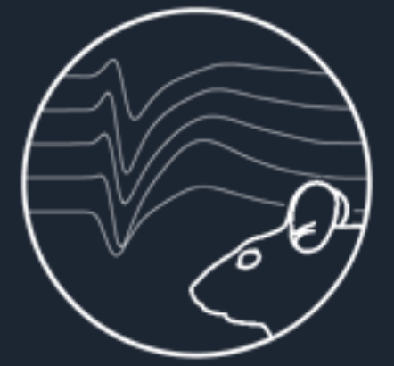

The Allen Brain Observatory presents the first standardized in vivo surveys of physiological activity in the mouse visual cortex. Neural activity is recorded using two different modalities: 2-photon optical physiology and Neuropixels probes. We make all the data from our systematic surveys of the mouse visual system available to the community for further analysis and exploration. These data provide a rich testbed for theories and models of cortical computation.
Brain Observatory Overview | Visual Coding: 2-photon | Visual Coding: Neuropixels | Visual Behavior: 2-photon | Visual Behavior: Neuropixels |
The Allen Brain Observatory Ecosystem on Github
The Allen Brain observatory encompasses two broad projects: Visual Coding and Visual Behavior. Visual Coding uses a broad range of visual stimuli, ranging from gratings and noise stimuli to natural images and movies which the mice passively view. It surveys the spatial and temporal dynamics of visual representation in the mouse corticothalamic visual pathways. In the Visual Behavior project, mice perform a visual change detection task to characterize how sensation and behavior are encoded in activity across the visual cortex and how these representations are influenced by behavior state and expectation. Both the Visual Behavior and Visual Coding projects include 2-photon and Neuropixels datasets that have slightly different implementations.
To accommodate the different neural recording modalities as well as the differences between Visual Coding and Visual Behavior, we have created several different Github repositories to facilitate data exploration and analysis across these different data variations.
Allen SDK
The Allen Institute for Brain Science has published the Allen Software Development Kit (SDK), which houses source code for reading and loading Allen Brain Observatory data.
Brain Observatory Utilities
The Brain Observatory Utilities (BOU) repository is a utility toolkit for processing, manipulating and visualizing data from the Allen Brain Observatory data via the Allen SDK.
Brain Observatory Analysis
The Brain Observatory Analysis (BOA) repository is an analysis toolkit focused on development of new analytical and visualization tools of Allen Brain Observatory data (Visual Behavior Ophys, Learning mFish).
Brain Observatory QC
repo description goes here